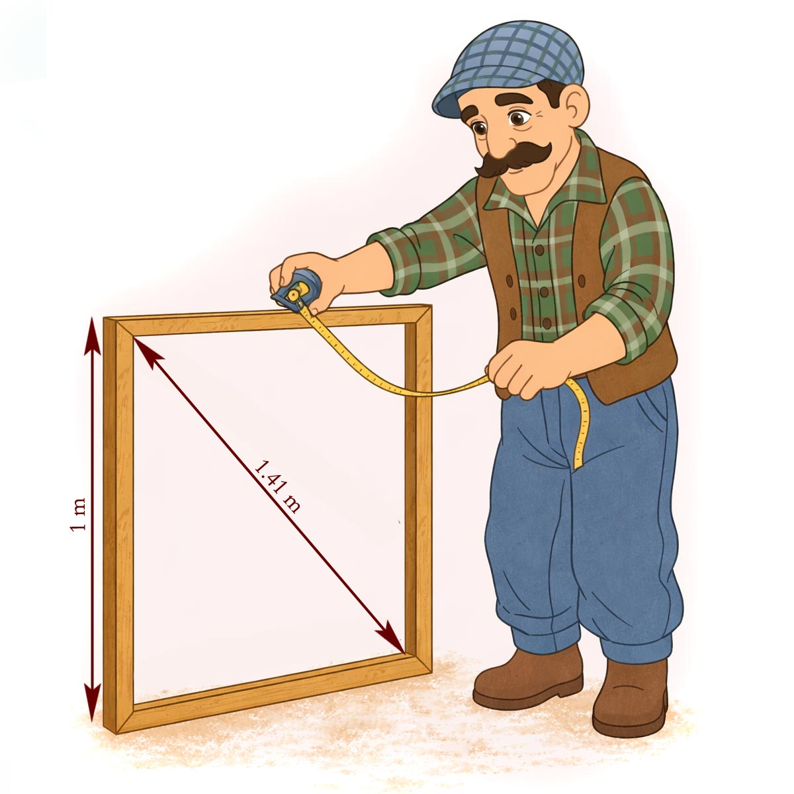
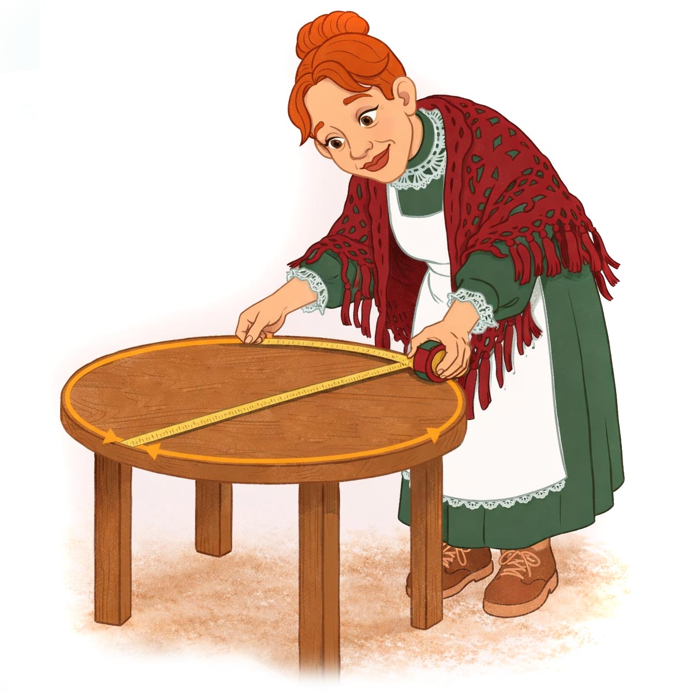
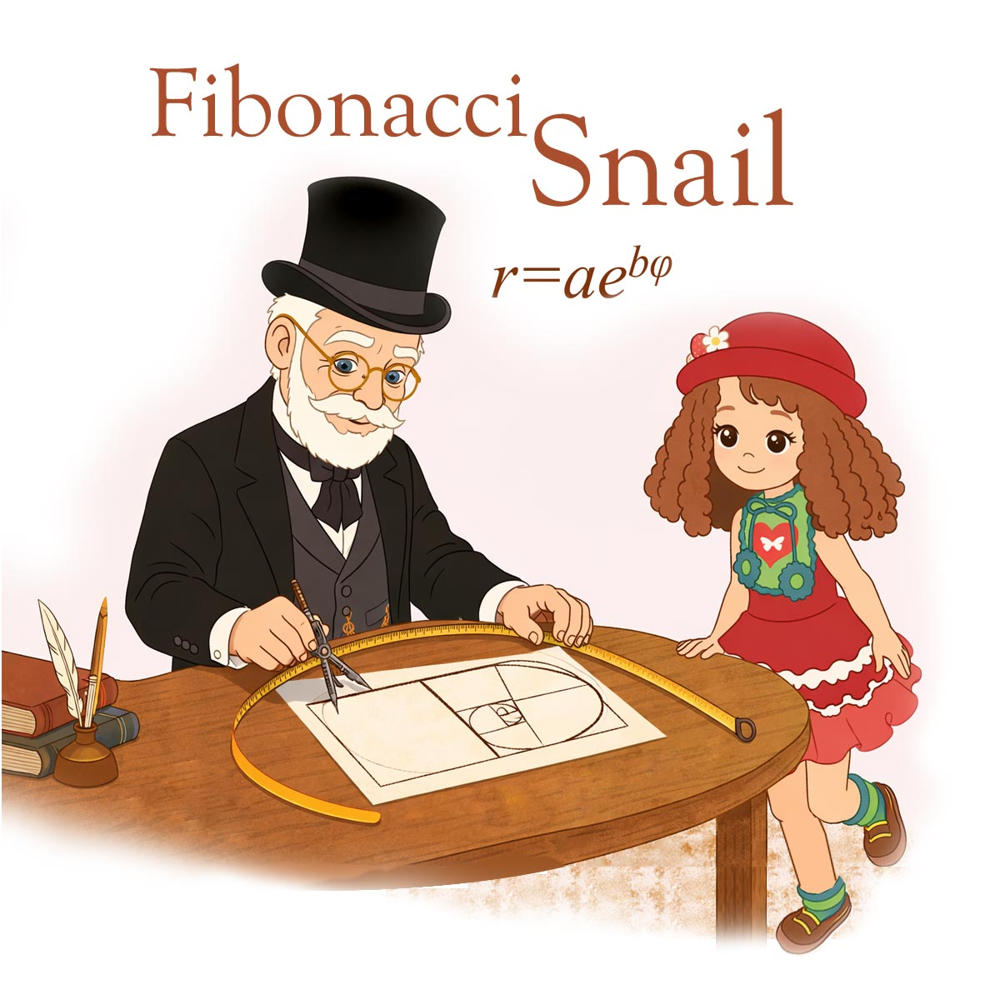
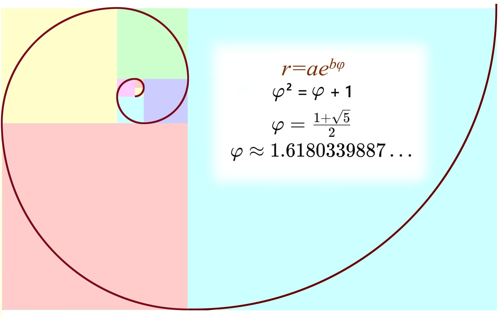

Настенька, Лиуми и Пиппа весело выбежали во двор.
Там дядя Лёша мастерил квадратную раму, а рядом стоял Василий Вольдемарович — дедушка Настеньки.
— А мы разобрались с числами! — радостно закричала Настенька. — Теперь и Пиппа, и Лиуми знают, что такое рациональные числа.
— Дядя Лёша, а ты о них знаешь?
Дядя Лёша удивлённо посмотрел на весёлую компанию.
— Да зачем мне это знать? — усмехнулся он. — У меня есть молоток, рулетка, инструменты. Мне этого хватает.
Василий Вольдемарович хитро улыбнулся:
— А вот сейчас я вас удивлю. Посмотрите на эту квадратную раму. Какова длина её стороны?
Дядя Лёша уверенно приложил рулетку:
— Ровно 1 метр.
— Замечательно, — кивнул дедушка. — А теперь давайте измерим диагональ этой рамы.

Он приложил рулетку и внимательно посмотрел на отметку.
— Примерно 1.41 метра…
— Я знаю! — закричал Лиуми. — Это рациональное число!
Василий Вольдемарович улыбнулся:
— А вот и нет.
— Но на рулетке же написано 1.41, — удивился Лиуми.
— Потому что рулетка показывает только приближённое значение, — объяснил дедушка. — На самом деле диагональ чуть длиннее. Если записывать это число дальше и дальше, его запись никогда не закончится.
Он взял мел и нарисовал на доске квадрат со стороной 1.
— Диагональ такого квадрата равна числу.
Его нельзя записать простой дробью. Такие числа называют иррациональными.
Пиппа задумчиво прошептала:
— Значит… есть числа, которые не укладываются в простую дробь?
— Именно так, — кивнул дедушка.
В этот момент тётя Поля, услышав разговор, подошла поближе и с интересом посмотрела на квадратную раму.
— Что это вы тут обсуждаете? Иррациональные числа? Звучит сложно… а на деле, наверное, всё проще, только я об этом не знала.
Василий Вольдемарович улыбнулся:
— Тогда давай проверим ещё одно удивительное число. Видишь этот круглый столик? Измерь его по краю — длину окружности.
Тётя Поля аккуратно обернула рулетку вокруг столика.
— Получилось… 94 сантиметра.
— А теперь измерь диаметр — через середину.
— 30 сантиметров, — ответила она.
— Теперь раздели одно число на другое.
Пиппа тут же достала свой маленький калькулятор.
— Сейчас посчитаем!
Она быстро нажала кнопки.
— 3.14…

Тётя Поля удивлённо подняла брови:
— Странное число…
Василий Вольдемарович указал на большую бочку у стены:
— А теперь давайте проверим ещё раз — на бочке.
Дядя Лёша подошёл, приложил рулетку и быстро сделал измерения.
— Окружность — 188 сантиметров, диаметр — 60 сантиметров.
Пиппа снова нажала кнопки.
— 3.14… снова!
Тётя Поля ахнула:
— Как же так? Столик маленький, бочка большая… а число получилось почти одинаковое!
Василий Вольдемарович тихо сказал:
— Потому что для любого круга это число одно и то же. Его называют "пи". — Это тоже иррациональное число. Его цифры после запятой никогда не заканчиваются.
Он сделал небольшую паузу и добавил:
— Но есть и другие особенные числа… Например, золотое число.
Настенька сразу оживилась:
— Золотое? Оно правда связано с золотом?
Василий Вольдемарович мягко улыбнулся:
— Не совсем. Оно связано с красотой и гармонией.
Он задумался на мгновение, затем сказал:
— Настенька, принеси, пожалуйста, циркуль, линейку и блокнот.
Настенька быстро побежала в дом и вскоре вернулась, держа в руках всё необходимое.
Василий Вольдемарович открыл блокнот и аккуратно начертил отрезок.
— Представьте, что этот отрезок разделён на две части — большую и меньшую. Если вся длина относится к большей части так же, как большая часть относится к меньшей — получается золотое сечение.
Он сделал несколько точных движений циркулем и линейкой и нарисовал прямоугольник.
— Если к квадрату приставлять всё новые и новые квадраты, получается особая фигура.

Затем дедушка плавно провёл линию через квадраты — получилась изящная закрученная линия.
— Посмотрите… это спираль.
Пиппа восхищённо ахнула:
— Как улитка!
Василий Вольдемарович кивнул:
— Верно. Такие спирали часто встречаются у улиток, в раковинах, в цветах и даже в далёких галактиках.
— Эту спираль называют спиралью Фибоначчи, а если представить себе улитку, которая растёт по такому закону, её можно назвать улиткой Фибоначчи.
Настенька улыбнулась:
— Тогда пусть она живёт в нашем блокноте!
Лиуми задумчиво спросил:
— А число, которое связано с этой спиралью… оно тоже иррациональное?
— Да, — ответил Василий Вольдемарович. — Это число называют "фи" — золотым числом. Его запись после запятой продолжается бесконечно и никогда не повторяется.

Он немного помолчал.
— Но есть ещё одно удивительное число. Оно связано не с формами, а с ростом.
Пиппа оживилась:
— С ростом? Как у растений?
— Именно так, — улыбнулся Василий Вольдемарович. — Представьте себе маленькое семечко. Каждый день оно растёт на одну и ту же часть от своего размера.
Настенька нахмурилась:
— То есть… чем больше оно становится, тем быстрее растёт?
— Совершенно верно, — сказал Василий Вольдемарович. — Если рост всё время происходит одинаковым образом — всегда на одну и ту же долю от текущего размера — появляется особенное число. Его называют "е"
— Это число тоже иррациональное. Его цифры после запятой никогда не заканчиваются.
Лиуми посмотрел на рисунок:
— Значит… одни иррациональные числа связаны с формами… а другие — с ростом?
— Очень хорошо сказано, — улыбнулся Василий Вольдемарович.
— √2 появляется в квадратах,
— π — в кругах,
— φ — в красивых пропорциях и спиралях,
— e — в процессах роста.
Настенька внимательно посмотрела на блокнот.
В нём были нарисованы квадрат, круг и изящная спираль улитки Фибоначчи.
— Значит… числа можно не только вычислять… но и находить в природе?
Василий Вольдемарович мягко кивнул:
— Именно так. Иногда числа — это не просто записи в тетради. Это тайные правила, по которым устроен мир.
Он закрыл блокнот, и нарисованная улитка Фибоначчи словно продолжала свой медленный путь — всё дальше и дальше, по бесконечной спирали чисел.